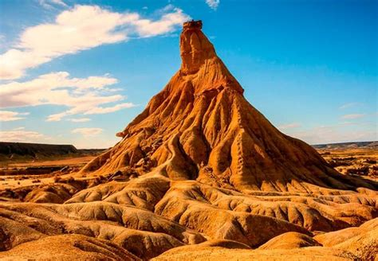

Navarra
Descripción
Navarra es una región en el norte de España con una gran variedad de paisajes, desde montañas hasta llanuras. Tiene una rica historia y una cultura propia con influencia vasca y española.
Datos Rápidos
- Capital: Pamplona
- Idioma Regional: Español, Euskera
- Población: ~640,000
- Famosa por: Los Sanfermines, naturaleza y gastronomía
- Dato Curioso: ¡El encierro de toros en Pamplona es famoso en todo el mundo!
Platos Populares
Pimientos rellenos

Chistorra

Trucha a la Navarra

Queso Roncal

Lugares Famosos
Catedral de Pamplona

Castillo de Olite

Parque Natural de las Bardenas Reales

Monasterio de Leyre

Mejor época para visitar
La mejor época para visitar Navarra es en primavera (abril–junio) y otoño (septiembre–noviembre), cuando el clima es agradable y hay muchas fiestas.
Símbolos Regionales
- Bandera:
- Escudo: